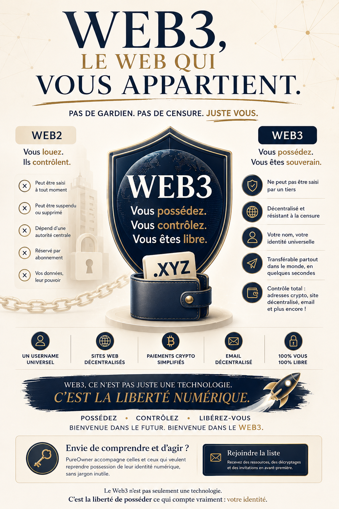
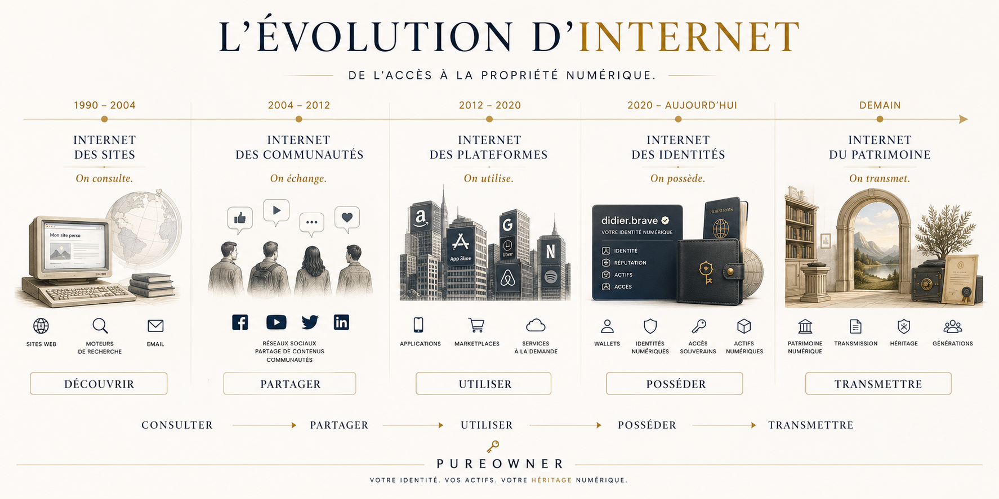
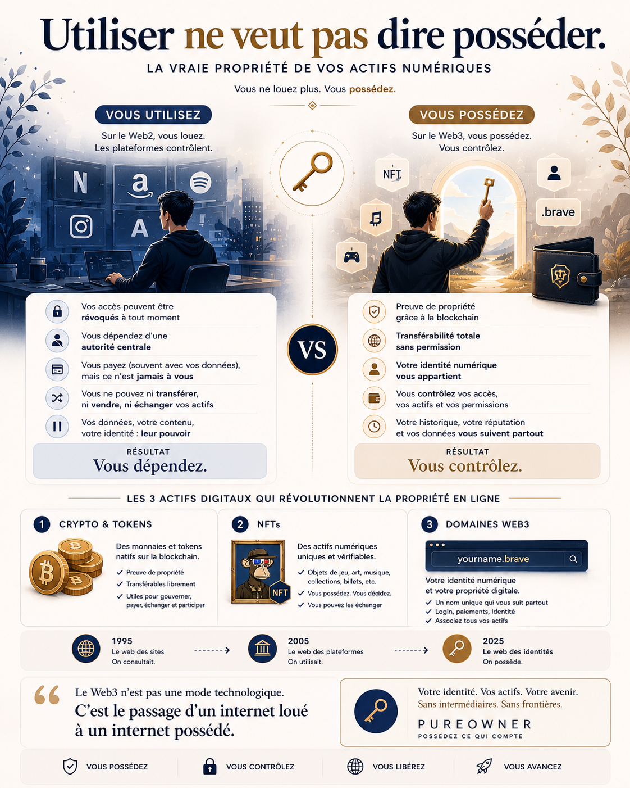
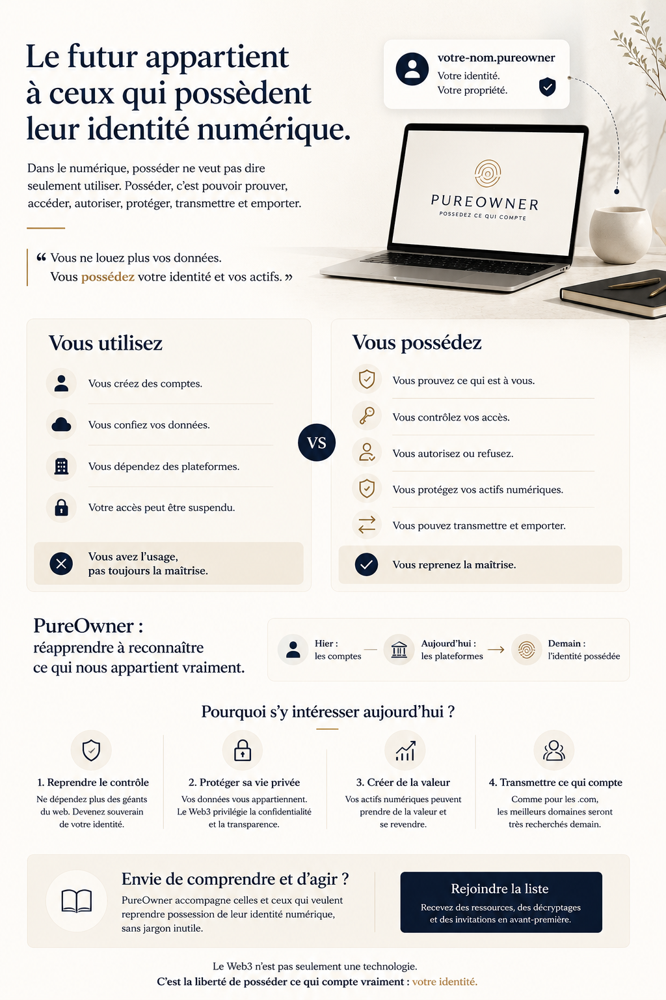
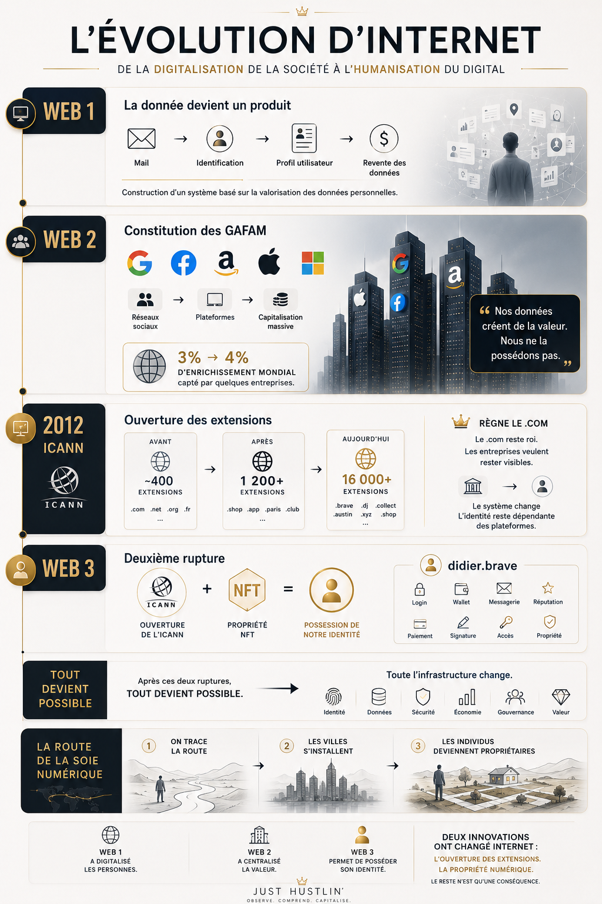

Own your digital self
Dans le monde numérique, la propriété ne se résume pas à l'usage. Elle se reconnaît à des signes précis : pouvoir prouver, accéder, autoriser, protéger, transmettre.


— Manifeste
Chaque jour, nous nous identifions, nous validons, nous autorisons, nous récupérons, nous protégeons. Ces gestes paraissent ordinaires. Pourtant, ils révèlent quelque chose de fondamental : ce qui compte vraiment exige une preuve, un contrôle, et une forme de responsabilité.
Lorsqu'un système vous demande qui vous êtes, il reconnaît déjà qu'un lien doit être établi entre vous et ce à quoi vous accédez. Lorsqu'un accès dépend d'un secret que vous seul détenez, la relation change encore : vous ne faites pas que demander l'entrée, vous activez une capacité qui vous est propre.
PureOwner part de cette intuition simple : la propriété n'est pas une abstraction lointaine. C'est une réalité concrète, lisible dans les mécanismes d'accès, de preuve, de consentement et de maîtrise.
« Ce qui vous appartient vraiment, vous pouvez le prouver, y accéder, le protéger, le transmettre — et l'emporter avec vous. »
— Les signes concrets
01
Ce qui vous appartient peut être relié à vous de manière crédible. La preuve n'est pas un détail administratif — c'est le fondement de tout droit.
02
Ce qui est à vous ne devrait pas dépendre entièrement d'un tiers. L'accès conditionné est un accès fragile.
03
La propriété inclut le droit de permettre ou de refuser. Sans ce pouvoir, vous n'êtes que locataire de ce que vous croyez posséder.
04
Ce qui a de la valeur appelle une garde. Protéger n'est pas une peur — c'est une responsabilité inhérente à la possession.
05
Ce qui vous appartient peut être confié, partagé ou légué. La transmission est la preuve ultime d'une propriété réelle.
06
Ce qui est à vous doit pouvoir vous suivre. Une propriété qui ne se déplace pas avec vous n'est qu'une permission temporaire.
— Méthode
Utiliser, c'est se servir de quelque chose. Posséder, c'est pouvoir prouver un lien, exercer un contrôle, et ne pas dépendre uniquement d'une autorité extérieure.
Le numérique a souvent brouillé une distinction essentielle : celle qui sépare l'usage de la possession.
On peut utiliser un service tous les jours sans en maîtriser l'accès. On peut dépendre d'une plateforme sans contrôler ce qu'elle sait, ce qu'elle garde, ou ce qu'elle décide.
On peut bénéficier d'un espace sans en être pleinement propriétaire. La différence est subtile dans l'expérience quotidienne — elle devient évidente au moment où quelque chose change.

— Observations
Chaque demande d'identification est une reconnaissance implicite : quelque chose vous appartient, et le système veut s'assurer que c'est bien vous. L'identité précède l'accès. Elle est la condition de la propriété.
Un mot de passe est une clé. Mais une clé confiée à un tiers n'est plus vraiment la vôtre. La question n'est pas de savoir si vous avez un mot de passe — c'est de savoir qui d'autre pourrait l'utiliser à votre place.
Lorsque vous êtes le seul à détenir la clé, la relation change fondamentalement. Vous n'êtes plus un utilisateur autorisé — vous êtes le propriétaire. Cette nuance est la plus importante du monde numérique.
Si quelqu'un d'autre peut décider que vous n'avez plus accès à ce que vous pensiez posséder, alors vous n'en étiez pas vraiment propriétaire. Vous en étiez l'usager toléré.
La portabilité est un test de propriété. Ce que vous ne pouvez pas emporter n'est pas à vous — c'est à la plateforme qui vous l'a prêté, sous conditions, jusqu'à nouvel ordre.
Le consentement est la forme la plus visible de la propriété sur soi. Être consulté, c'est être reconnu comme propriétaire de quelque chose — votre attention, vos données, votre décision.

— Vision
Nous avons appris à utiliser des interfaces. Nous avons appris à ouvrir des comptes, accepter des conditions, stocker nos traces, partager nos informations.
Mais nous avons rarement appris à reconnaître les conditions réelles de la propriété. À distinguer ce qui nous appartient de ce qui nous est simplement prêté, sous conditions, jusqu'à révocation.
PureOwner défend une idée simple : dans un environnement numérique dense, savoir ce qui nous appartient vraiment devient une compétence de base.

— Ce que PureOwner rend possible
I
Comprendre les mécanismes réels qui définissent la propriété dans un environnement numérique. Sans jargon, sans simplification excessive.
II
Distinguer l'usage de la possession, la permission de la maîtrise, l'accès conditionné de l'accès souverain.
III
Identifier les leviers concrets qui permettent de passer d'un statut d'usager à celui de propriétaire dans sa vie numérique.
IV
Développer des réflexes durables, une attention juste, et une posture cohérente face aux systèmes qui gèrent ce qui nous appartient.
— Rejoindre
Rejoignez PureOwner pour suivre le lancement et recevoir les premiers contenus, réflexions et outils autour de la propriété personnelle à l'ère numérique.
Aucun bruit inutile. Seulement des contenus clairs, utiles et bien pensés.